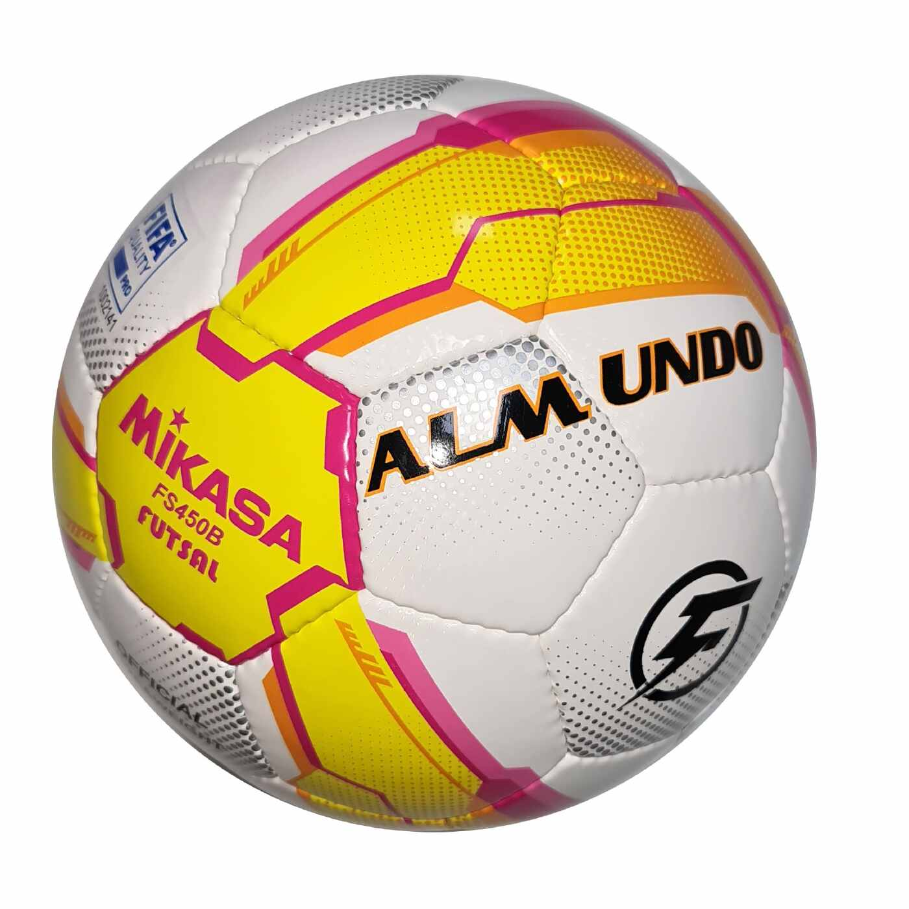

Category: Sports
FIFA World Cup Winners & Runners List from 1930 to 2022
The history of the FIFA World Cup is replete with illustrious figures, groups, and competitions. To know about the FIFA world cup winners list from 1930 to 2018 Read the complete Article. below.
By: Uday Sharma | May 8, 2024, 9:00am IST | @blogdevs

The history of the FIFA World Cup is replete with illustrious figures, groups, and competitions. The tournament, which is played every four years, has produced a true who's who of football's greatest players and goal scorers. In 2018, Luka Modric earned the golden ball, Harry Kane the golden boot, and France took home the Cup. The FIFA world cup winners list from 1930 to 2018 is shown below.
Introduction
The FIFA World Cup is widely recognized as the largest and most well-known international competition. It is also the sporting event that is watched and followed the most around the globe. One round of the competition is held every four years. With the exception of 1942 and 1946, when it was postponed owing to World War II, the tournament has been held every four years since it began in 1930.About 190 to 200 national teams compete fiercely to represent their countries on the largest football platform in the globe. In the end, only 32 teams qualified for the competition. Just a few months remain until the 2022 Qatar World Cup, and soccer supporters are eager to cheer on their nations and favorite players on the grandest platform.Even being selected to represent your nation at the FIFA World Cup is a significant accomplishment, never mind winning it. France won the 2018 World Cup, making them the current champions. The FIFA world cup winners list from 1930 to 2018 is listed below.
FIFA World Cup Winner And Runners-Up List In Order
In this section, we have highlighted the FIFA world cup winners list in order of the year. This FIFA world cup winners and runners list shall give you an insight into the legacy and help you choose your favorite team.
Most Time FIFA World Cup Winner
Twenty-one championship matches, with 79 national teams, have been played as of the 2018 FIFA World Cup. Eight national teams have claimed the prize as their own. Brazil is the most time FIFA world cup winner and the only team to have competed in every event. It has won five times. Germany and Italy are the other World Cup champions, each with four titles; Argentina, France, and Uruguay, first-place finishers, each with two titles; and England and Spain, each with one title.Top 10 FIFA World Cup Winner Team, Times & Year
Brazil - 5 Times Winner / 6 Times in the Final
Germany - 4 Times Winner/ 8 Times in the Final
Italy - 4 Times Winner/ 6 Times in the Final
Argentina - 2 Times Winner/ 5 Times in the Final
Uruguay - 2 Times Winner / 2 Times in the Final
France - 1 Time Winner / 2 Times in the Final
Spain - 1 Time Winner / 1 Time in the Final
England - 1 Time Winner/ 1 Time in the Final
Netherlands - 0 Time Winner / 3 Time in the Final
Czechoslovakia - 0 Time Winner/ 2 Time in the Final
Hungary - 0 Time Winner / 2 Time in the Final
Sweden - 0 Time Winner / 1 Time in the Final
Brazil - 5 Times Winner / 6 Times in the Final
Germany - 4 Times Winner/ 8 Times in the Final
Italy - 4 Times Winner/ 6 Times in the Final
Argentina - 2 Times Winner/ 5 Times in the Final
Uruguay - 2 Times Winner / 2 Times in the Final
France - 1 Time Winner / 2 Times in the Final
Spain - 1 Time Winner / 1 Time in the Final
England - 1 Time Winner/ 1 Time in the Final
Netherlands - 0 Time Winner / 3 Time in the Final
Czechoslovakia - 0 Time Winner/ 2 Time in the Final
Hungary - 0 Time Winner / 2 Time in the Final
Sweden - 0 Time Winner / 1 Time in the Final
Conclusion
The 2022 World Cup will be held in Qatar, and the 2026 World Cup will be co-hosted by Canada, the United States, and Mexico, making Mexico the first nation to host matches in three World Cups. We hope this FIFA world cup winners list was useful to our audience. Watch this space for further information.
FIFA Winners List: Frequently Asked Questions
How many teams have won the FIFA World Cup?
9 teams have won FIFA World Cup till now since 1930 to 2018.
Which country plays FIFA the most?
Top Countries Playing FIFA
United States – 24.74%
Germany – 5.36%
United Kingdom – 5.27%
Russia – 4.32%
Brazil – 4.04%
United States – 24.74%
Germany – 5.36%
United Kingdom – 5.27%
Russia – 4.32%
Brazil – 4.04%
Has any player won 4 FIFA World Cup Medals?
Germany and Italy have won the FIFA World Cup four times each.